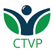

Participantes vinculados ao território
Território 1 • Vila Pinto
Cooperativa de Triagem (CTVP) e Centro de Educação Ambiental (CEA) da Vila Pinto
Localizada no bairro Bom Jesus, em Porto Alegre, a cooperativa e o centro de educação ambiental na Vila Pinto integram o território da Bonja, uma região marcada pela organização comunitária, pela resistência histórica e pelo protagonismo de seus moradores. Ao longo das décadas, a comunidade construiu soluções coletivas para enfrentar desafios urbanos, consolidando um forte tecido social e uma identidade territorial ativa.
Nesse contexto, a Cooperativa Vila Pinto se destaca como um potencial centro de referência em gestão de resíduos. Mais do que um espaço de triagem, a cooperativa atua como um elo entre sustentabilidade ambiental, inclusão produtiva e desenvolvimento local, gerando trabalho, renda e impacto social direto no território.
A atuação da cooperativa está profundamente conectada à realidade da Bonja, um território com alta densidade, diversidade social e desafios estruturais, mas também com grande capacidade de mobilização e inovação comunitária. Essa proximidade permite soluções mais eficientes, baseadas no conhecimento local e na articulação entre diferentes atores.
A Vila Pinto representa, assim, um modelo concreto de como cooperativas podem operar como infraestruturas essenciais da economia circular, fortalecendo cadeias de reciclagem ao mesmo tempo em que promovem cidadania e transformação social.
Mais do que gerir resíduos, a Vila Pinto ajuda a construir futuros possíveis a partir do território.

Registros operacionais realizados
Participantes com localização definida
Participantes ativos na coleta
Resumo do território
Informações principais
Cooperativa
UT Vila Pinto
Núcleo territorial com atuação na triagem, articulação comunitária e fortalecimento da cadeia local de reciclagem.
Acessar página da cooperativa
Ações rápidas
Atalhos do território
Mapa territorial
Localização e presença no território
Base do território: Vila Pinto
Sobre o território
Território estratégico de atuação
A página da Vila Pinto centraliza informações essenciais para leitura rápida da operação local, permitindo acompanhar volume, registros, acessos e articulações vinculadas ao CRGR.
Objetivo
Gestão integrada e acompanhamento contínuo
Este ambiente foi pensado para apoiar coordenação, governança, cooperados e equipes técnicas com uma visão mais clara e organizada do território.